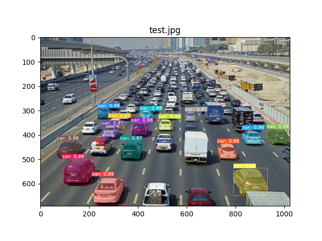

YOLACT
写在前面
因为项目的需要，就试着跑了YOLACT，把过程记录在这儿。
YOLACT：https://github.com/dbolya/yolact
环境配置
创建虚拟环境
1 | conda create -n yolact python=3.7 |
- 用conda创建一个yolact虚拟环境，这样可以搭建独立的python运行环境，使的每个项目的运行互不影响；
- 激活该虚拟环境。
- add|新电脑上source ~/anaconda3/bin/activate
安装pytorch和其他的包
1 | conda install pytorch torchvision cudatoolkit=10.0 |
- cudatoolkit=x.x取决cuda版本，因为我用的是师兄的服务器，cuda是10.0的版本，所以cudatoolkit=10.0；
- conda install的好处是能够根据cudatoolkit的版本安装相对应版本的pytorch和torchvision，不用我们自己匹配。
安装COCOAPI
1 | cd cocoapi/PythonAPI |
【注意】setup.py文件里第12行的
extra_compile_args={‘gcc’: [‘/Qstd=c99’]},
改为
extra_compile_args=[‘-std=c99’],
*编译可变性卷积层（如果要使用YOLACT++）
1 | cd ../../yolact-master/external/DCNv2 |
运行YOLACT
GPU设置
YOLACT源码默认使用多GPU，而我只用了一个GPU，所以在运行前要设置一下。
1 | export CUDA_VISIBLE_DEVICES=[gpus] |
比如我用的是2号GPU，所以命令就是
1 | export CUDA_VISIBLE_DEVICES=2 |
add|换了新电脑就可以用多GPUS啦!
1 | export CUDA_VISIBLE_DEVICES=0,1,2,3 |
运行
运行前把github上的yolact_plus_base_54_800000.pth下载到/weights文件夹里
如果运行yolact，进入eval.py所在文件夹
1 | cd /..../yolact-master |
add|如果运行yolact++：
1 | cd /..../yolact-master |
python eval.py —trained_model=weights/yolact_plus_base_54_800000.pth —score_threshold=0.15 —top_k=15 —images=/home/youyx/data/datasets/TUM/rgbd_dataset_freiburg1_xyz/rgb/:/home/youyx/data/yolact_out_fr1_xyz
python eval.py —trained_model=weights/yolact_plus_base_54_800000.pth —score_threshold=0.15 —top_k=15 —images=/home/youyx/data/datasets/double_3_1/:/home/youyx/data/double_3_1_out
python eval.py —trained_model=weights/yolact_plus_resnet50_54_800000.pth —score_threshold=0.15 —top_k=15 —images=/home/youyx/data/datasets/double_3_1/:/home/youyx/data/double_3_1_out
结果

可以看到识别出了一些车，速度也是比较快的。
command
配置好环境后，以后再次运行yolact就只需要使用以下命令
1 | source activate |
公众号“小鸡炖技术”整理了完整的压缩包，百度云链接：https://pan.baidu.com/s/1ZKxm9L4fqT0CqwPjEUaYBg 提取码pket。